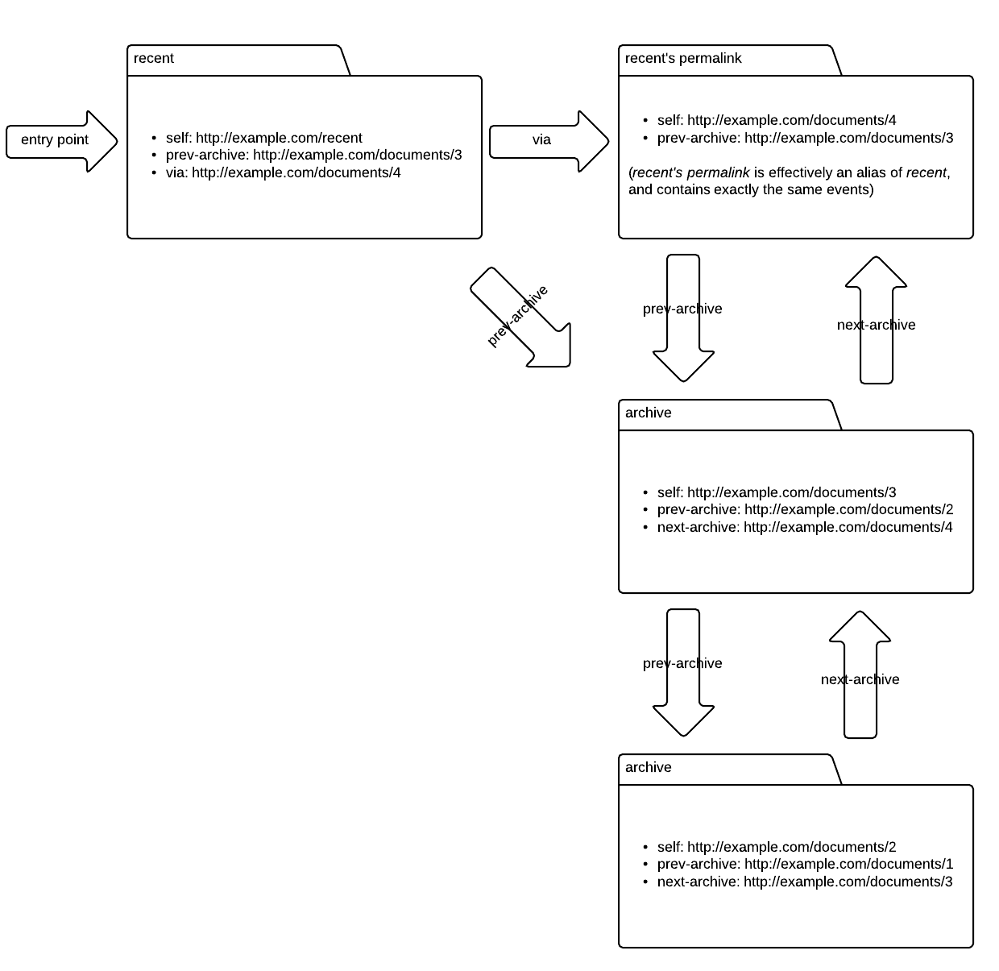

A simple Atom-based protocol for broadcasting a feed of events.
Atom is an XML-based syndication format which represents time-ordered series of events. In Atom terminology, each event is an entry and the series of events is a feed.
Both feeds and entries have metadata associated with them, for example a title and a unique identifier. They can also have links with a rel attribute describing the relationship the link represents, for example a link with rel "self" that points back to the selfsame entry or feed.
<?xml version="1.0">
<feed xmlns="http://www.w3.org/2005/Atom">
<id>urn:uuid:ff31a040-75bc-11e2-bcfd-0800200c9a66</id>
<title type="text">Notifications</title>
<updated>2013-01-02T10:03:00Z</updated>
<generator>Foo CMS</generator>
<link rel="self" href="http://example.com/documents/2" />
<entry>
<id>urn:uuid:eb3ee5a0-75be-11e2-bcfd-0800200c9a66</id>
<title type="text">Edit</title>
<updated>2013-01-02T10:01:00Z</updated>
<author>
<name>jsmith</name>
</author>
<link rel="self" href="http://example.com/entry/33" />
<content type="application/vnd.example.document+xml">
<title>HR policies</title>
<link href="http://example.com/cms/pdf/456" />
</content>
</entry>
<entry>
<id>urn:uuid:1d3334a0-75bd-11e2-bcfd-0800200c9a66</id>
<title type="text">User created</title>
<updated>2013-01-02T07:31:00Z</updated>
<author>
<name>dgonzales</name>
</author>
<link rel="self" href="http://example.com/entry/32" />
<content type="application/vnd.example.user+xml">
<username>jsmith</username>
<role>editor</role>
<email>jsmith@example.com</email>
</content>
</entry>
</feed>
Atom is optimised and designed for RESTful systems that communicate over HTTP.
Atom is a general-purpose format that can be extended to fit a particular domain. By using a well-understood general-purpose format as a basis, we can reuse tools, infrastructure and semantics. The Atom syndication format was formalised in RFC 4287.
Atom can be used to implement event-driven systems by adding an entry to the feed every time something happens that consumers might be interested in. Consumers find out about these events by polling the feed. When new consumers arrive, they can simply also start polling the feed without any change needed to the feed provider.
Depending on the nature of the event and the size of the resource that it applies to, the Atom entry could either include a snapshot of the new state of the resource, or simply link to the resource so that the client can issue a fresh GET.
Because Atom is based on polling, it has high latency compared to other approaches, which might make it unsuitable for real time systems. However, using a RESTful polling approach decouples client and server, and provides scalability through the opportunity for heavy caching.
We will describe a protocol suitable for broadcasting events to multiple consumers using Atom. To keep things simple, we won't worry about editing or writing to feeds. We will assume that the server providing the feed has some way of recognising and registering new events as Atom entries.
"Atom" can also sometimes refer to AtomPub, a protocol for editing and publishing web resources built on top of the Atom XML format. If you need your feed to be editable over HTTP, AtomPub is a good place to start.
As well as conforming to the Atom XML format, our Simplefeed protocol is based on the following rules:
Though it is good practice to use intuitive URLs, the protocol in no way depends on the structure of the URLs. Consumers should follow links, and not attempt to construct URLs themselves.
As Atom entries are intended to be available indefinitely, the feed of events can grow very large over time. This makes the feed too large for consumers to conveniently GET over a network.
The solution is to break up a single logical feed into many documents. As Atom is designed to follow RESTful conventions, Atom does this by means of links.
The feed provider breaks up the series of events into separate documents and gives each of them their own URL. The provider might choose to make each document represent a period of time e.g. a day, or might divide the series of events evenly so that each document has e.g. 100 entries.
Similar to a doubly-linked list, each document has prev-archive and next-archive links that can be followed to find the next document in the chain.
There are two special cases. Because it is at the head of the list, the recent document cannot have a next-archive link. Similarly, the first document does not have a prev-archive link.
The recent document is the published entry point to the feed. Consumers of the event feed will always be able to retrieve http://example.com/recent to get the most recent entries.
Documents older than the recent one are known as archived documents. Archived documents do not change after they have been created, but the recent document will continue to have entries prepended to it until the feed provider archives it. This means that caching can be much more agressive for archived documents than the recent document.
<?xml version="1.0">
<feed xmlns="http://www.w3.org/2005/Atom">
<id>urn:uuid:ff31a040-75bc-11e2-bcfd-0800200c9a66</id>
<title type="text">Recent notifications</title>
<link rel="self" href="http://example.com/recent" />
<link rel="prev-archive" href="http://example.com/documents/3" />
<!-- There is no "next-archive" link as this is the most recent document. -->
<link rel="via" href="http://example.com/documents/4" />
<entry>..</entry>
<entry>..</entry>
<entry>..</entry>
</feed>
The recent document can also be accessed through its permanent URL, which is represented with a "via" link. Once the feed provider has archived the current recent document, it will create a new one and leave the via link intact.
<?xml version="1.0">
<feed xmlns="http://www.w3.org/2005/Atom">
<id>urn:uuid:ff31a040-75bc-11e2-bcfd-0800200c9a66</id>
<title type="text">Notifications</title>
<link rel="self" href="http://example.com/documents/4" />
<link rel="prev-archive" href="http://example.com/documents/3" />
<!-- There is no "next-archive" link as this is the most recent document. -->
<entry>..</entry>
<entry>..</entry>
<entry>..</entry>
</feed>
Consumers who are interested in older entries can follow the "prev-archive" link to the previous document.
<?xml version="1.0">
<feed xmlns="http://www.w3.org/2005/Atom">
<id>urn:uuid:ff31a040-75bc-11e2-bcfd-0800200c9a66</id>
<title type="text">Notifications</title>
<link rel="self" href="http://example.com/documents/3" />
<link rel="next-archive" href="http://example.com/documents/4" />
<link rel="prev-archive" href="http://example.com/documents/2" />
<entry>..</entry>
<entry>..</entry>
<entry>..</entry>
</feed>
This document has been archived, and should therefore never change. Consumers wishing to find older or newer entries than the ones in this document can find them by following the "prev-archive" and "next-archive" links respectively.
<?xml version="1.0">
<feed xmlns="http://www.w3.org/2005/Atom">
<id>urn:uuid:ff31a040-75bc-11e2-bcfd-0800200c9a66</id>
<title type="text">Notifications</title>
<link rel="self" href="http://example.com/documents/2" />
<link rel="next-archive" href="http://example.com/documents/3" />
<link rel="prev-archive" href="http://example.com/documents/1" />
<entry>..</entry>
<entry>..</entry>
<entry>..</entry>
</feed>
This is another archived document, and can also be heavily cached. Finding older or newer entries is again a matter of following the "prev-archive" or "next-archive" links. Consumers who wish to read the entire history can continue to follow "prev-archive" links until they come across a document with no such link, which will be the first.
<?xml version="1.0">
<feed xmlns="http://www.w3.org/2005/Atom">
<id>urn:uuid:ff31a040-75bc-11e2-bcfd-0800200c9a66</id>
<title type="text">Notifications</title>
<link rel="self" href="http://example.com/documents/1" />
<link rel="next-archive" href="http://example.com/documents/2" />
<!-- There is no "prev-archive" link as this is the first document. -->
<entry>..</entry>
<entry>..</entry>
<entry>..</entry>
</feed>
A consumer of an Atom feed keeps track of the unique identifier of the most recent entry it has processed. Because the entries are time ordered, and the only change is to add new entries onto the front of the feed, consumers can work backwards till they find the oldest entry they have not yet processed, and then work forwards through the feed processing each event in turn.
For example, a consumer might know that it has most recently processed the entry with id "urn:uuid:fc374b00-75c7-11e2-bcfd-0800200c9a66".
This consumer wants to check if there are any more recent entries, so it issues a GET request on http://example.com/recent, which is the published entry-point of the feed.
<?xml version="1.0">
<feed xmlns="http://www.w3.org/2005/Atom">
<link rel="self" href="http://example.com/recent" />
<link rel="prev-archive" href="http://example.com/documents/3" />
<link rel="via" href="http://example.com/documents/4" />
<entry>
<id>urn:uuid:e2089090-75c7-11e2-bcfd-0800200c9a66</id>
</entry>
<entry>
<id>urn:uuid:d765c950-75c7-11e2-bcfd-0800200c9a66</id>
</entry>
</feed>
The entry with id "urn:uuid:fc374b00-75c7-11e2-bcfd-0800200c9a66" is not present. This is because since the consumer last checked the feed, the provider has added new entries to the front of the feed, archiving a document and starting a new one in the process.
The consumer therefore issues a GET request for the previous document, which has the URL "http://example.com/documents/3".
<?xml version="1.0">
<feed xmlns="http://www.w3.org/2005/Atom">
<link rel="self" href="http://example.com/documents/3" />
<link rel="next-archive" href="http://example.com/documents/4" />
<link rel="prev-archive" href="http://example.com/documents/2" />
<entry>
<id>urn:uuid:f37a81d0-75c7-11e2-bcfd-0800200c9a66</id>
</entry>
<entry>
<id>urn:uuid:fc374b00-75c7-11e2-bcfd-0800200c9a66</id>
</entry>
</feed>
This time, the consumer does find the entry it last processed. The consumer can now start to work its way back to the front of the feed, by processing the one new entry in document 3, and then going through the entries in the recent document.
As the consumer goes through the entries, it keeps updating its record of the most recent entry processed. Note that because the series of entries is time-ordered, the client need only keep track of the identifier of the most recent entry it has processed.
Notice that the feed provider does not have to keep track of who the consumers are or which entry they are each up to. The guarantee that new events are always added to the front of the list allows consumers to do that for themselves.

One of the biggest advantages to using Atom is caching. Servers should serve archived documents with aggressive Cache-Control headers, because once a document is archived, it does not change. Servers can take advantage of this by writing archived documents out to disk and serving them as static files.
Note that this caching is possible because the pagination of entries into documents is controlled by the feed provider. If every consumer could decide how to break up the series of entries, we would have to cache many different pagination combinations.
Consumers should not care how pagination is implemented, because they simply follow links and retrieve resources. The provider might choose to break the feed into time periods e.g. a document per day. However, if the flow of events is irregular, that could lead to some documents being very large and others being very small. This can be addressed by keeping a fixed number of entries per document.
Cache-Control headers on the recent document are limited by the freshness requirements of the system. It may still worthwhile allowing consumers and HTTP caches to cache the recent document for a short period of time, as it can reduce load on the server hosting the feed, but the length of time in the header must take into account how quickly consumers need to find out about new events.
For example, in a system with heavy load, using Cache-Control headers with a short time-to-live in conjunction with a reverse proxy gives an upper-bound on how often the server needs to generate the recent document. For example, a time-to-live of 60 seconds means that the origin server will only have to generate the recent document once per minute, regardless of how many consumers there are.
Another useful optimisation for the recent document are ETags and Last-Modified headers. Consumers poll the recent document potentially very often, so if they are able to issue a conditional GET accompanied by an ETag or Last-Modified date then the feed provider can simply reply with a 304 Not Modified response and avoid transferring the entire recent document to the consumer.
A great reference for understanding Atom's use in RESTful event-driven systems is REST in Practice by Jim Webber, Savas Parastatidis and Ian Robinson. We based our description of Simplefeed on Chapter 7.
Atomfeed is a library for using Simplefeed from Java or Java Spring web applications. Currently a work-in-progress.